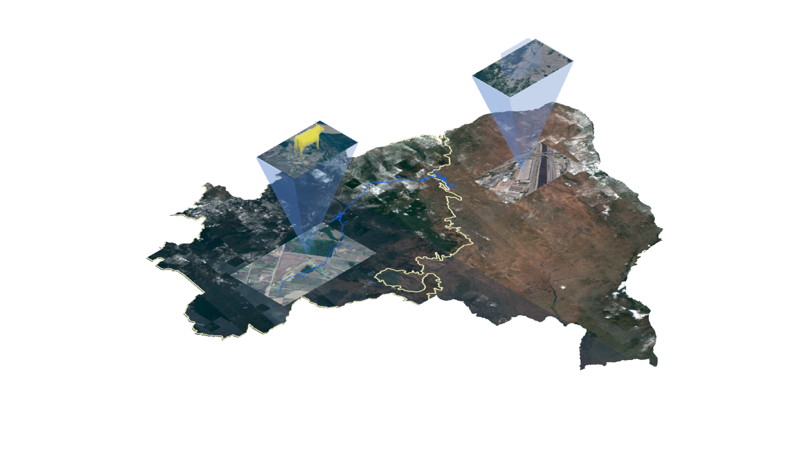
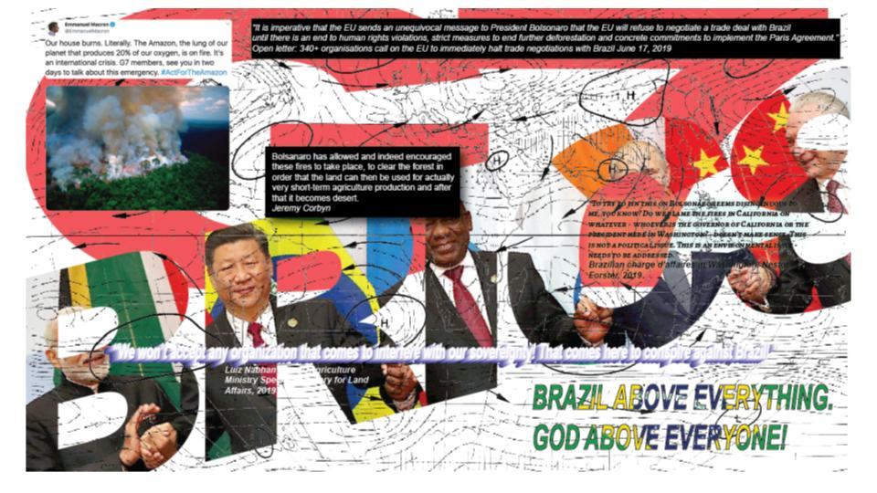
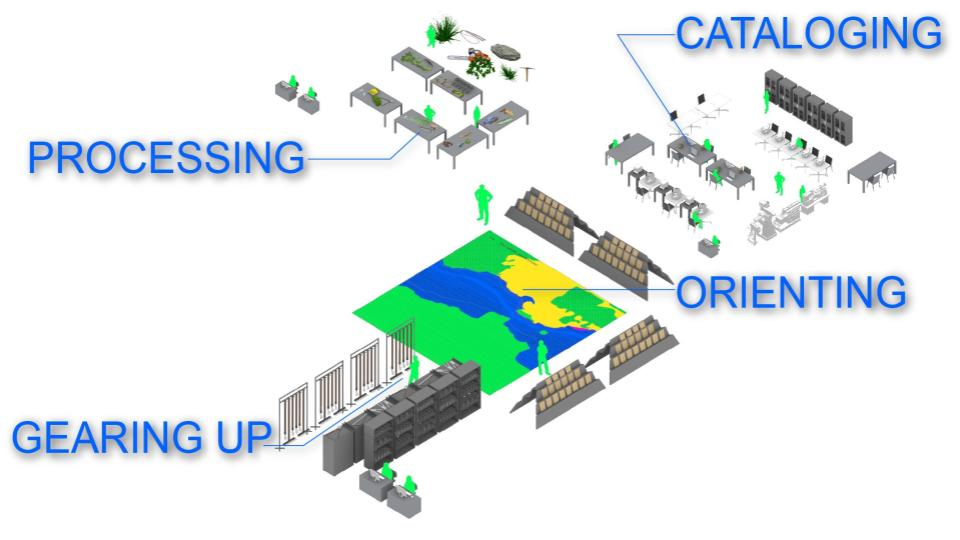
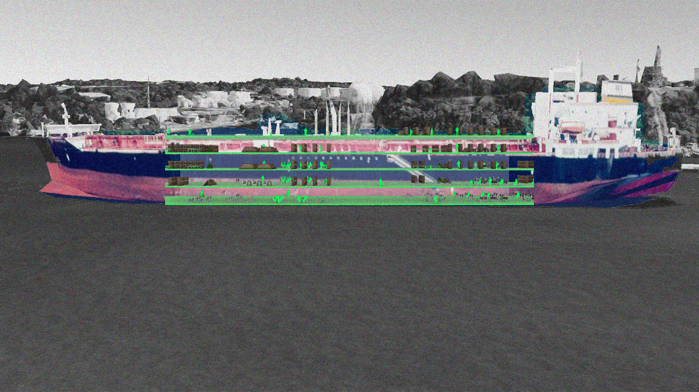

Archive Amazonia
This collaborative project is a studio project, completed for M.Arch at University of Minnesota. ARCH 8255: Surveillant City studio was led by professor Vahan Misakyan.
The project was created with Meg Lundquist and Hana Bushyhead.
In the late summer and into the fall of 2019, the Amazon Rainforest was on fire. The acute emergency called our attention to researching and mapping the condition of the Amazon, and led to a speculative research project. The final design proposal is a network of archives; we designed a protocol and a spatial logistic to make an argument about globalization, extraction, and emergency in the Amazon.
EXCERPT:
The Amazon has long held status as a territorial condition, a fiction of the international imagination, an abstraction, rather than a place that is both biome and anthrome.

In August 2019 the Amazon Rainforest was experiencing more fires that month than any other month on record.
The emergency, caused by human manipulation of natural conditions, exacerbated the natural into a preternatural state of heightened urgency.
The world was on fire. It was a global emergency. In the public sphere, the realm of appearances, political agents perform agendas.
Politics around emergency create a new logic that exists despite and outside of geography, and uses emergency to further the reach of bureaucratic action.

In 1970, the military government of Brazil created the National Integration Plan and the Transamazonian Highway was constructed.
The Highway was a method for expanding Brazil’s productive capacity into the untapped regions of the Northwest. Farmers were lured from the fertile south to colonize wild Amazonia. The road gave the military access to defend Brazil’s natural resources. The building of this road, despite its nationalist rhetoric, was financed and built by a combination of Brazilian and veiled foreign organizations.
In 2019, Jair Bolsonaro was elected president with the slogan “Brazil above Everything, God above Everyone.”
The Amazon is no longer merely nature, but also a product of the symbi-otic and parasitic rela-tionships between human and nature, politics and geography, machine and terrain.
The Amazon as global “nature” is obsolete. It has no role in the current economy.
Our proposal oscillates between acting earnestly, being utopian, and of-fering critique. The Amazonian Archive pauses the cycle of anthropogenic and ecologic changes. It saves the Amazon, not for re-generating later, but to generate and share knowledge. The original order of the Amazon is the power inscribed within this project. Our proposed intervention is an Amazonian Archive, or rather a system of archives that constitute a new infrastructure for the production of knowledge.
Using a new set of tools and machines, local activ-ists-turned-archivists cap-ture and curate the artifacts of the biological, ecological, and anthropogenic however they want- they are the experts!
They report to field offices. The original order of the forest, as the people of the forest determine, is preserved in the archive. The field office operates as the base for collecting.
Navigational maps will orient the archivists, as they gear up for a collecting trip. The archivists will process, and catalog the artifacts they collect. This is the spatial product of the archival infra-structure, a repeated series of program.

Manaus is a node for logistics in this archival system. Manaus is the largest city in the Amazon, home to 3 million people. Manaus’s icon is the Amazon Theater, a pink Portugese Colonial-style building is yet another collector, as well as a place of performance.
This logistics center is where artifacts are brought to be processed; program sorted, documented, and packed into containers heading further east to Maraba.

Navigating the Amazon and Tocanteens river, the institute’s vessel carries passengers and a multi-storied archive to Maraba. The mobile archive becomes a stage for a new surveillance effort that documents manmade production, environmental effects, and movement patterns.
In this way, the archive generates its own data. Instead of becoming a machine for waiting, the people on the boat are in the process of navigating and archiving by becoming familiar with the artifacts and geography of the amazon.